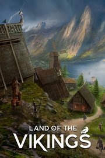

Land of the Vikings
Detalles
|  | |
| Tiempo de juego | No Jugado |
| Última actividad | Nunca |
| Añadido | 11/13/2024 0:35:38 |
| Modificado | 11/13/2024 1:06:03 |
| Estado de finalización | No Jugado |
| Librería | Playnite |
| Fuente | PORCHE |
| Plataforma | PC (Windows) |
| Fecha de lanzamiento | 10/9/2023 |
| Puntuación de la Comunidad | 74 |
| Puntuación de la Crítica | 76 |
| Puntuación de usuario | |
| Género | Estrategia |
| Desarrollador | Laps Games |
| Editor | Iceberg Interactive |
| Característica | Cloud Saves Cromos De Logros De Préstamo Familiar Un Jugador Workshop |
| Enlaces | Punto de encuentro Discusiones Guías Noticias Página de la tienda PCGamingWiki Logros Workshop |
| Tag | 3D Acceso anticipado Construcción Construcción de bases Construcción de ciudades Economía Estrategia Gestión Gestión de recursos Históricos Mitología Multijugador Realistas Sandbox Simulación Simulador de colonias Supervivencia Tácticos Un jugador Vikingos |
Descripción

Gestiona tu aprovisionamiento
Tala árboles, planta y cosecha cultivos, caza animales, extrae minerales y pesca en los mares y fiordos cercanos. Planifica bien la gestión de recursos para garantizar la supervivencia de tu aldea en invierno y expande tu asentamiento cada vez más con el paso de las estaciones.

Conoce a tus vikingos
Cada uno de tus aldeanos es único. Podrás encontrar a todo tipo de personajes en tu aldea con más de 20 características distintas. Desde fornidas mujeres de gran musculatura a dramáticos socarrones de lengua sibilina. Ten en cuenta las habilidades y capacidades de tus aldeanos al asignarles las labores: ¡cada vikingo tiene sus puntos fuertes, y eso repercutirá en su eficacia en distintas tareas!
A medida que el asentamiento crezca, habrá más vikingos que quieran unirse a tu aldea. La decisión de darles la bienvenida o rechazarlos será tuya. Con el paso del tiempo, tus vikingos también comenzarán formarán familias y darán a luz a nuevas generaciones, lo que prolongará su linaje y reforzará tu asentamiento.
Sobrevive al clima adverso y supera los eventos
Tu asentamiento afrontará numerosos desafíos en esta tierra: desde terremotos a rayos caídos desde Asgard que provoquen incendios. Mantén la unidad entre tus vikingos para superar los diversos desastres que pueden ocurrir.
 Cada estación plantea sus propios retos, igual que los eventos y los desastres. Prepárate para enfrentarte a tormentas y ventiscas, o al letal y prolongado frío del invierno. ¡Aprovisiónate de leña y alimentos para que tus vikingos no pasen hambre ni frío!
Cada estación plantea sus propios retos, igual que los eventos y los desastres. Prepárate para enfrentarte a tormentas y ventiscas, o al letal y prolongado frío del invierno. ¡Aprovisiónate de leña y alimentos para que tus vikingos no pasen hambre ni frío!
Comercia con asentamientos vecinos
Los asentamientos vecinos serán un gran medio para obtener mercancía y desarrollar vuestra economía. Una vez construyas un muelle comercial, comenzarán a llegar barcos con distinta mercancía. También podrás enviar tus propias expediciones comerciales mientras tengas suficientes aldeanos para gobernar la embarcación, ¡y suficiente cerveza como combustible para la tripulación!
Ataca y saquea a tus enemigos
Todo jarl sabe que la violencia es el camino más corto a la gloria. Reúne a tus vikingos y ordena atacar a otras aldeas para haceros con su oro, plata y aumentar vuestros puntos de fama. Adiestra y fortalece a tus vikingos y dirígelos hasta la victoria con el nuevo sistema de combate. ¡Y no olvides defender tu propio asentamiento de los ataques de otras aldeas!
 Una vez tu asentamiento florezca, diversos adalides vikingos querrán unir sus hachas a tu causa. Los adalides dirigirán a tus tropas a la batalla, inspirarán a tus guerreros y les otorgarán otras bonificaciones.
Una vez tu asentamiento florezca, diversos adalides vikingos querrán unir sus hachas a tu causa. Los adalides dirigirán a tus tropas a la batalla, inspirarán a tus guerreros y les otorgarán otras bonificaciones.
Celebra fiestas y decora el lugar
¡Olvídate de las cuadrículas! Podrás construir donde quieras y diseñar el asentamiento a tu gusto para tener a tus vikingos satisfechos. Construye monumentos en honor de Odín o Freya y personaliza tus barcos vikingos. ¡Incluso puedes modificar el aspecto de las casas con el editor de construcción! ¡Este potente editor te permitirá construir y personalizar montones de edificios y ornamentos!

Yggdrasil, el árbol de la vida
Desbloquea nuevos edificios y bonificaciones gastando los puntos de fama en el árbol de la vida. Descubre la producción de cerveza y construye una taberna en la que tus aldeanos puedan relajarse. Invierte en ranchos de cabras para conseguir lana y tejer telas con las que hacer prendas de mejor calidad. Si mejoras las condiciones de vida y los recursos disponibles en el lugar, la salud y satisfacción de sus habitantes también mejorará, y tu asentamiento prosperará.